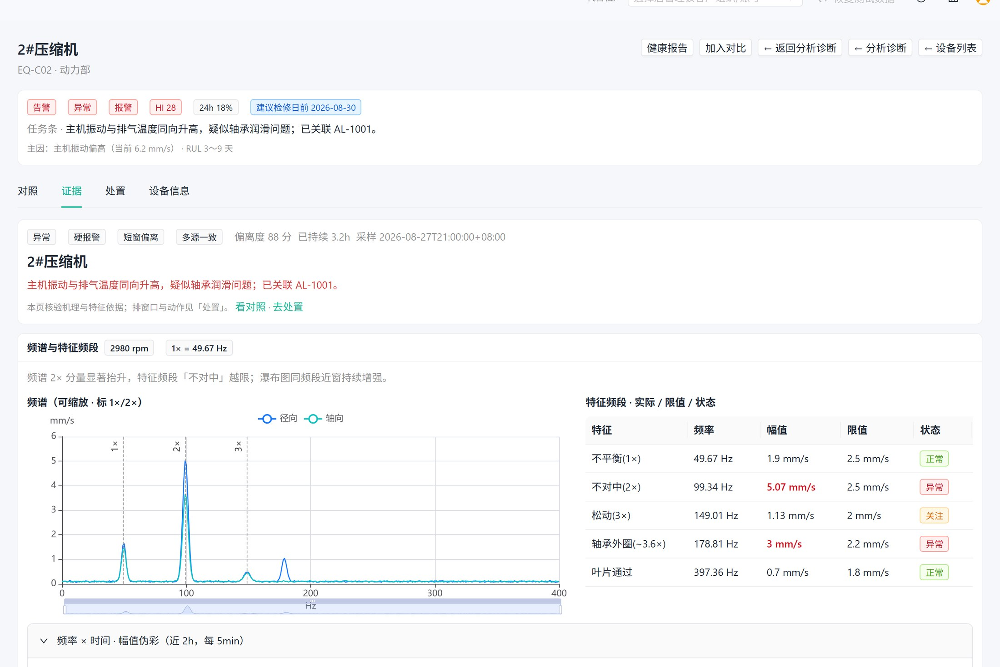
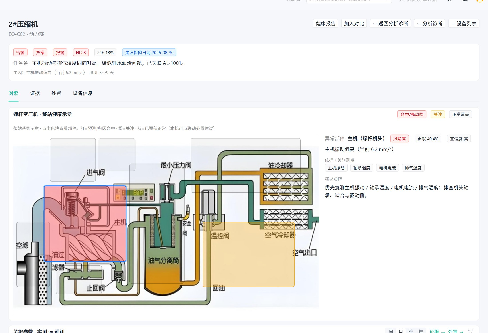
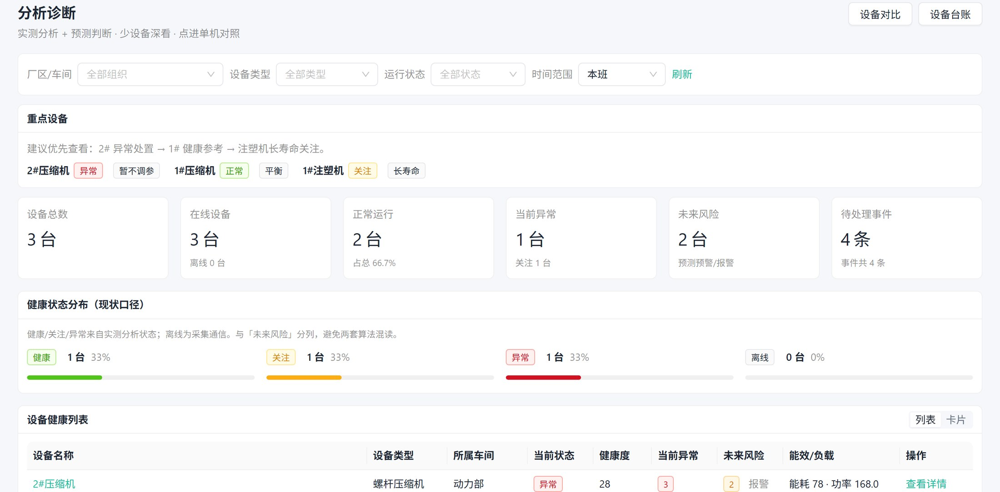
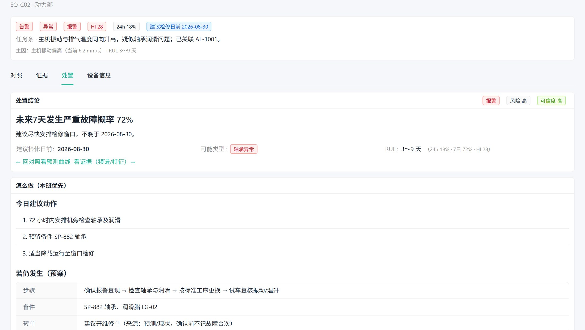
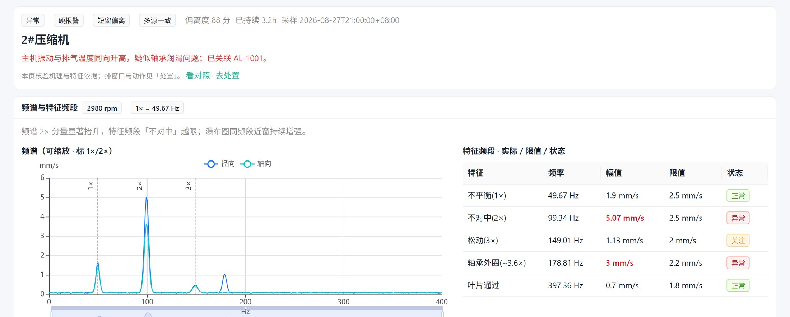

01 / 一线运维
看得懂，做得到
从“看告警”到“知道先做什么”
- 2× 不对中 5.07 mm/s，轴承外圈 3.0 mm/s，一眼看到越限特征
- 原因候选：轴承磨损 76%、润滑不足 18%，带置信度
- 今日动作、备件 SP-882、若仍发生的预案，直接可执行

不用再靠“老师傅听声音”判断。
从一条振动告警，到一份可执行的检修结论。把“超限了”变成“哪类故障、还能跑多久、先做什么”。

工厂不缺测点，也不缺告警；缺的是把“超限了”变成“哪类故障、还能跑多久、先做什么”的那一步。
设备坏了才知道，非计划停机打乱交期？
告警天天刷屏，真正危险被淹没？
知道振动超限，却说不清是哪类故障？
有测点、有数据，却形不成结论和动作？
备件靠猜、检修靠救火，窗口排不出来？
多车间多设备，主管不知道先看哪台？
坏了再修，非计划停机，备件被动采购。
按固定周期保养，容易过修，也容易欠修。
看振动、温度，知道“超限了”，但不知道原因。
证据 + 模型，判断故障类型、剩余寿命和检修窗口。
以风险为中心，维修策略、备件和产能一起排。
一线要“看得懂、做得到”，主管要“先看哪台、什么时候修”，高层要“停机损失能不能提前算”。
从“看告警”到“知道先做什么”

从“救火”到“排窗口”

从“停机才知道”到“计划内检修”

不是“接个传感器就完了”：采集、诊断、预测、处置、机队，每一段都要能对上同一台设备、同一条证据。
较近 7 日均值约 +32%；轴承温度 92℃，排气温度 118℃。
限值 2.5；轴承外圈 3.0 mm/s（限值 2.2），频谱与瀑布同频段增强。
润滑不足 18%、紧固松动 6%；HI 28，RUL 3–9 天，7 天故障概率 72%。
72 小时内检查轴承/润滑，备件 SP-882，降载运行；对比突发停机 2 天 1 小时。

2#压缩机 · 动力部 · 一次从采样到处置的完整记录。
主机振动 6.2 mm/s、轴承温度 92℃、电机电流 96 A、排气温度 118℃；较近 7 日均值约 +32%。
2× 99.34 Hz 幅值 5.07 mm/s（限值 2.5）；轴承外圈 3.0 mm/s（限值 2.2）。原因候选：轴承磨损 76%。
预留备件 SP-882 轴承；建议检修窗口不晚于 2026-08-30；RUL 3–9 天，7 天严重故障概率 72%。
对比“如果不处理”：可能由计划更换升级为非计划停机，突发停机约 2 天 1 小时；少停约 1 天 17 小时。
不建议一上来全厂接测点；先选一类停机损失最高的设备，用真实故障验证“诊断—处置”能不能闭环。
停机损失最高、故障重复出现的那一类。
振动、温度、电流、压力；先支撑诊断，不求全。
看证据是否一致、误报多少、处置是否可执行。
看误报、漏报、检修时效，再扩设备类型。
先做一次 30 分钟线上沟通，选一类设备看数据能不能支撑诊断。不适合会直接说。
工诊可单独上线，不依赖智排；与智排 / 智艺 / 智检合买时，设备编码、工艺与质量数据可对齐。具体功能、交付范围与报价以合同为准。